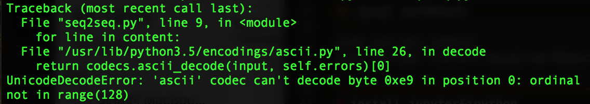

利用nvidia-docker 設置環境
1 | sudo apt-get update |
安裝 nvidia-docker1
2
3# Install nvidia-docker and nvidia-docker-plugin
wget -P /tmp https://github.com/NVIDIA/nvidia-docker/releases/download/v1.0.1/nvidia-docker_1.0.1-1_amd64.deb
sudo dpkg -i /tmp/nvidia-docker*.deb && rm /tmp/nvidia-docker*.deb
測試 nvidia-smi 验证是否安装成功1
sudo nvidia-docker run --rm nvidia/cuda nvidia-smi
從 Tensorflow 的 Docker Hub 拉 Image1
2sudo nvidia-docker run -d -p 8889:8888 --name test2 -v /home/jacky/Downloads:/workspace tensorflow/tensorflow:latest-gpu
sudo nvidia-docker exec -it 容器name bash 或者 sudo nvidia-docker exec -it 容器ID
-p 將外部的8889port對到內部的8888port
-v 將本機的Downloads文件夾掛載到Dockder的workspace
進入容器後 通過以下指令可以得到 jupyter notebook 的 token1
jupyter notebook list
用nvdia-docker替代docker命令1
2echo 'alias docker=nvidia-docker' >> ~/.bashrc
bash
啟動、停止、刪除docker container1
2
3
4
5
6sudo docker container ls -a //查看所有容器狀態
sudo docker ps //查看啟動的容器
sudo docker container start container-name //啟動
sudo docker container restart container-name //重新啟動
sudo docker container stop container-name //終止容器
sudo docker container rm container-name //刪除容器 (需要先終止容器)
解決Docker容器中文亂碼問題
當出入如下問題時

通過locale指令 可以發現 當前編碼格式為 POSIX1
locale
解決方法：
step1: 安裝 locales1
2apt-get update
apt-get install -y locales
step2: change locale setting1
2locale-gen en_US.UTF-8
export LANG=en_US.UTF-8 LANGUAGE=en_US.en LC_ALL=en_US.UTF-8
docker install 1
docker install 2
docker gitbook
Set the locale to UTF-8 for Python 3